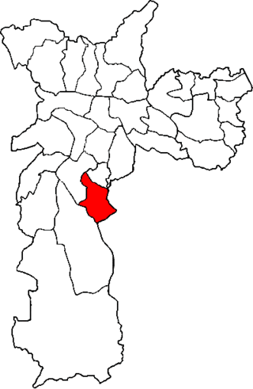

Lista de Bairros
Página Inicial
São Paulo
Cidade Ademar

Lista de Bairros
Americanópolis
Cidade Ademar
Cidade Júlia
Cupecê
Jardim Cidália
Jardim Cupecê
Jardim Harmonia
Jardim Los Angeles
Jardim Luso
Jardim Santo Antoninho
Jardim São Carlos
Jardim São Jorge
Jardim Sônia
Jardim Uberaba
Jardim Vilas Boas
Jardim Zaira
Vila Capela
Vila Castelo
Vila Clara
Vila Erna
Vila Império
Vila Inglesa
Vila Joaniza
Vila Marari
Vila Nova Caledônia
Vila Patrimonial
Vila Rica
Vila Santa Catarina
Vila São Paulo